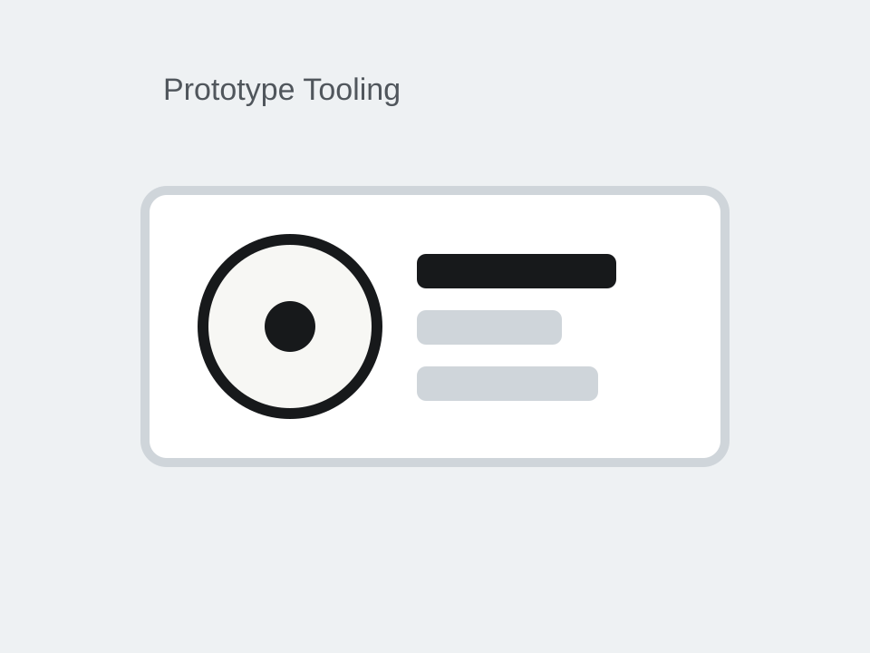

Additional Project
Cable Strain Relief
Developed cable strain-relief concepts to protect electrical interfaces under vibration, handling loads, and repeated use in a demanding hardware environment.
Overview
The goal was to manage cable routing and load transfer so electrical connections were not carrying unintended mechanical loads. The work focused on practical retention geometry, packaging, and durability.
What I Built
- Strain-relief concepts for constrained cable-routing environments
- Retention geometry aimed at protecting connectors under load
- Design refinements balancing packaging, serviceability, and robustness
Images

